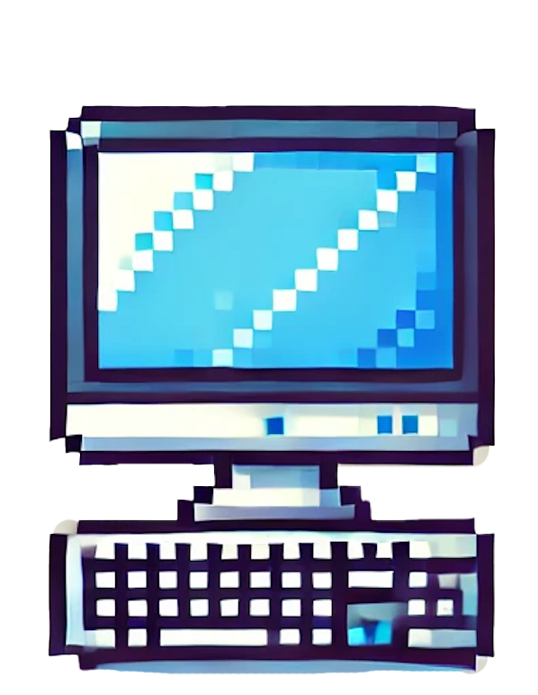
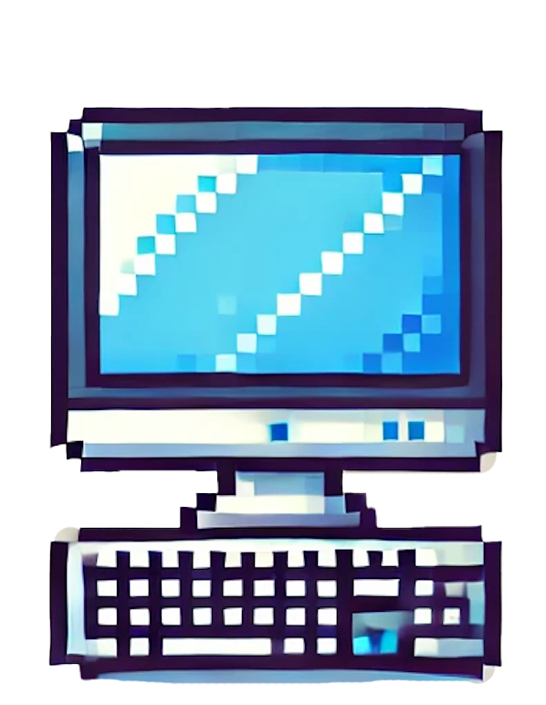
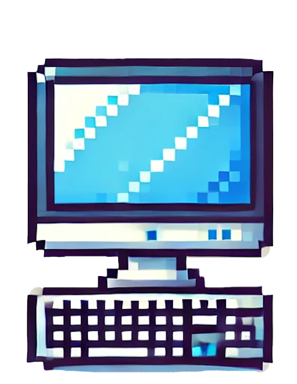

What to Avoid
 

Welcome to BYTE-BOUNCE! In this game you will play as Dr. Marshall—an IT professor at Brigham-Young University. Dr. Marshall is late to teach his class, but there are piles of broken hardware in his way. To win, you must help Dr. Marshall avoid broken servers, PCs, and routers so that he can make it to class on time.
This game has only two controls. Use the up-arrow to jump and the down arrow to duck.
